Еж3-путеизмеритель
Еж3-путеизмеритель — уникальный служебный состав Московского метрополитена. В его составе сохранён последний оригинальный вагон Еж3 в России — №5824, а также вагон-лаборатория СЦБ и связи №5564, который служит с 1975 года.
Общая информация
📍 Депо приписки
ТЧ-4 «Красная Пресня»
С 01.10.2020. Ранее: ТЧ-6 «Планерное» (до 10.2020), ТЧ-11 «Выхино»
🎯 Назначение
Контроль состояния рельсового пути и контактного рельса, а также систем СЦБ.
🚇 Тип состава
Еж3/Ем-508Т с вагоном-путеизмерителем 81-714 (ЛВЗ).
📊 Особенность
В составе путеизмерителя имеется последний оригинальный Еж3 в РФ — №5824.
⭐ Вагон №5564 служит с 1975 года как лаборатория СЦБ и связи. Вагон №5824 — последний оригинальный Еж3 в России, не проходивший КВР.
Составность поезда
Бывшая составность составность (до 2019 года):
5564 — 5672 — 7374 — 5667 — 5824
Текущая составность (с 2019 года):
5564 — 6552 — 7374 — 6719 — 5824
Текущая составность с резервными вагонами(с 2019 года):
5564 — 6552 — 7374 — 6749 — 6406 — 6435 — 6719 — 5824
| № вагона | Модель | Роль | Особенности |
|---|---|---|---|
| 5564 | Еж3 | Лаборатория СЦБ и связи | Переоборудован в 1975, салон изменён (сохранились плафоны и пластик), КВР не проходил. Служит с 1975 года. |
| 6552 | Ем-508Т | Сопровождение | КВР ЗРЭПС, демонтирована кабина. |
| 7374 | 81-714 (ЛВЗ) | Путеизмеритель | Переоборудован в 2006. |
| 6719 | Ем-508Т | Сопровождение | КВР ЗРЭПС (2010), демонтирована кабина. |
| 5824 | Еж3 | Сопровождение | КВР не проходил, последний оригинальный Еж3 в РФ. |
История
Постройка вагона 5564
Вагон №5564 построен на Мытищинском машиностроительном заводе.
Постройка вагона 5824
Вагон №5824 построен. КВР не проходил, сохранил оригинальный салон.
Переоборудование 5564
Вагон №5564 переоборудован в вагон-лабораторию автоматики и радиосвязи службы СЦБ. Салон перестроен из пассажирского в техническое купе с оборудованием. Кабина изменениям не подвергалась.
Переоборудование 7374
Вагон №7374 (81-714 ЛВЗ) переоборудован в путеизмеритель.
Модернизация лаборатории
Вагон №5564 переоборудован для работы с АРС 2/6.
Табличка «ПЕРВЫЙ!»
Первый и последний раз на составе была установлена табличка «ПЕРВЫЙ!» (фото andzis).
Последний выезд УМ5 №806
Первый и последний выезд старого путеизмерителя УМ5 №806 в дни пассажирской эксплуатации нового участка до станции «Строгино».
Смена составности
Вагоны 5672 и 5667 отставлены. В состав включены 6552 и 6719.
Передача в ТЧ-4
Состав передан из ТЧ-6 «Планерное» в ТЧ-4 «Красная Пресня».
Продление срока эксплуатации
Срок эксплуатации вагона №5564 продлён до конца 2027 года.
Особенности вагонов
Вагон №5564 (Еж3)
- Лаборатория СЦБ и связи
- Переоборудован в 1975 году
- Салон изменён (сохранились плафоны и пластик)
- КВР не проходил
- Служит с 1975 года
Вагон №5824 (Еж3)
- Последний оригинальный Еж3 в РФ
- Сопровождение лаборатории и путеизмерителя
- КВР не проходил
- Оригинальные круглые плафоны освещения
- Диваны и старые боковины
Вагон №7374 (81-714 ЛВЗ)
- Путеизмеритель
- Переоборудован в 2006 году
- Жёлто-оранжевая окраска
Вагоны сопровождения (6552, 6719)
- Модель: Ем-508Т
- КВР ЗРЭПС, демонтирована кабина
- Используются для надёжности и тяги
Фотогалерея
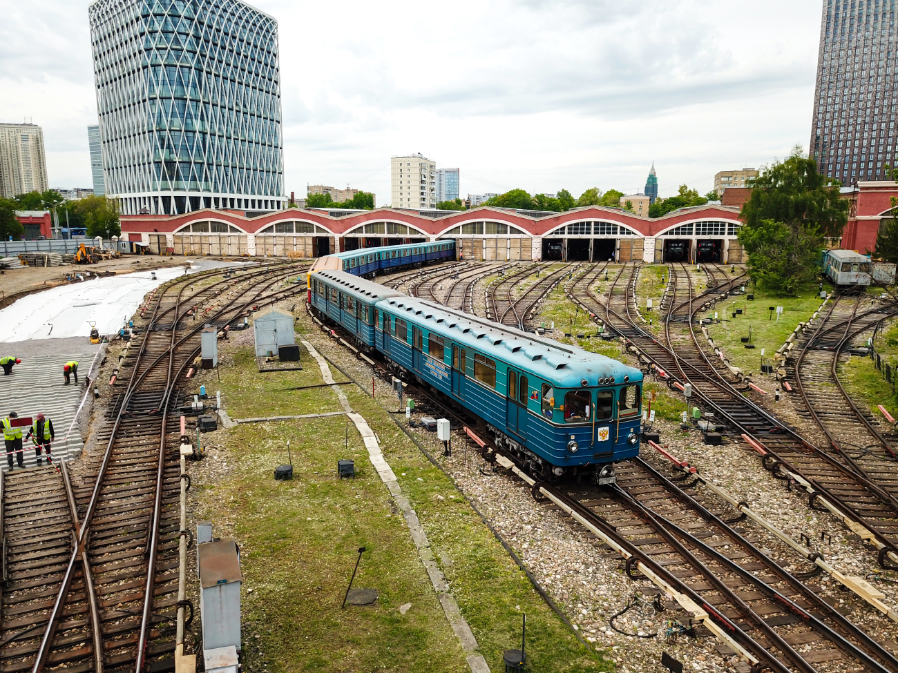
📸 mosnikita
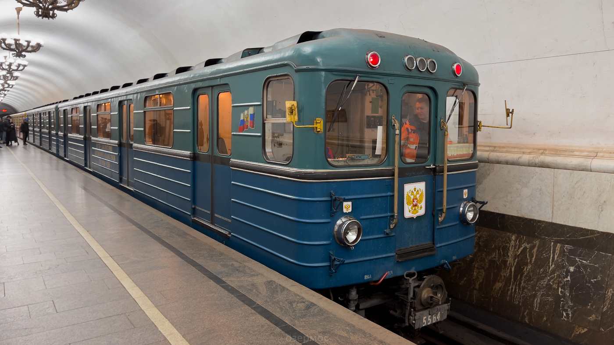
📸 Озермос
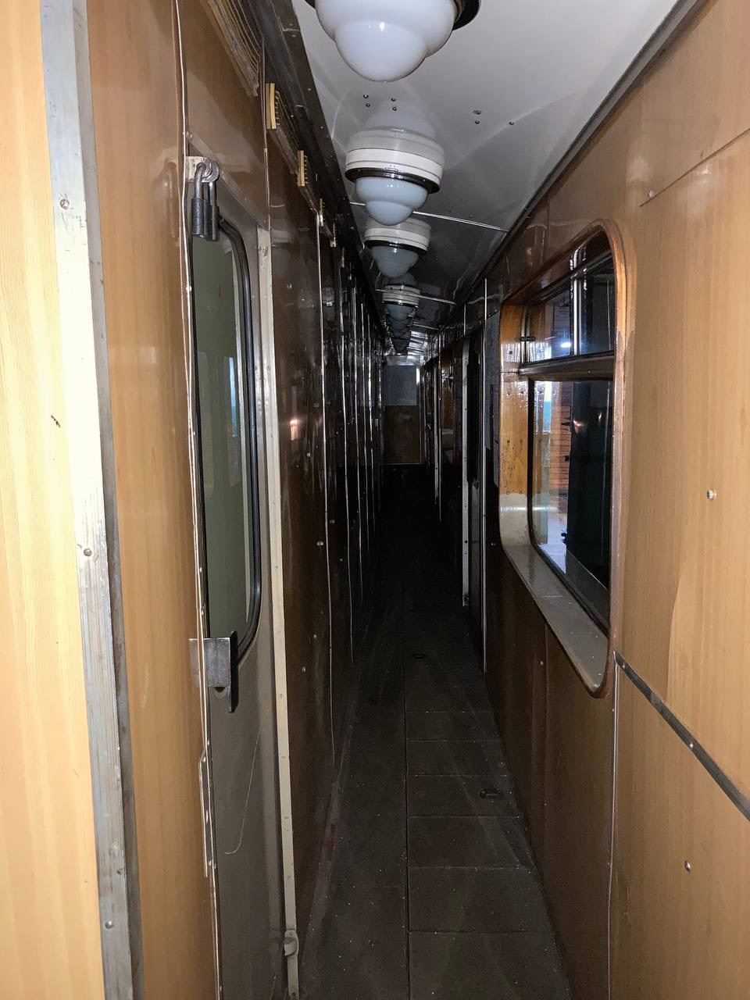
📸 Welder
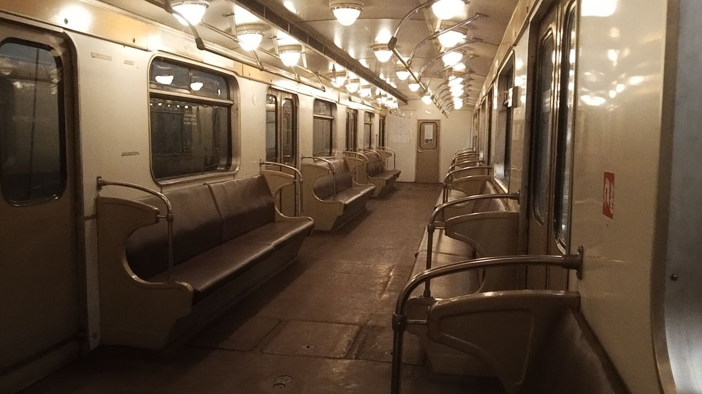
📸 pfandrom
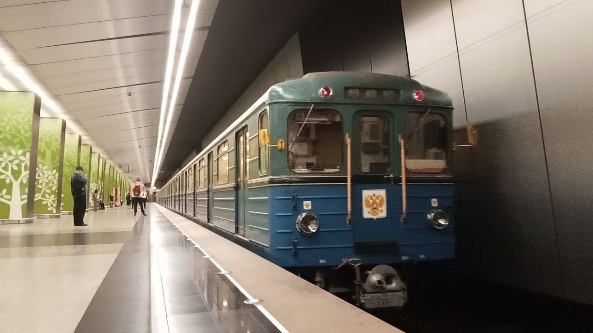
📸 pfandrom
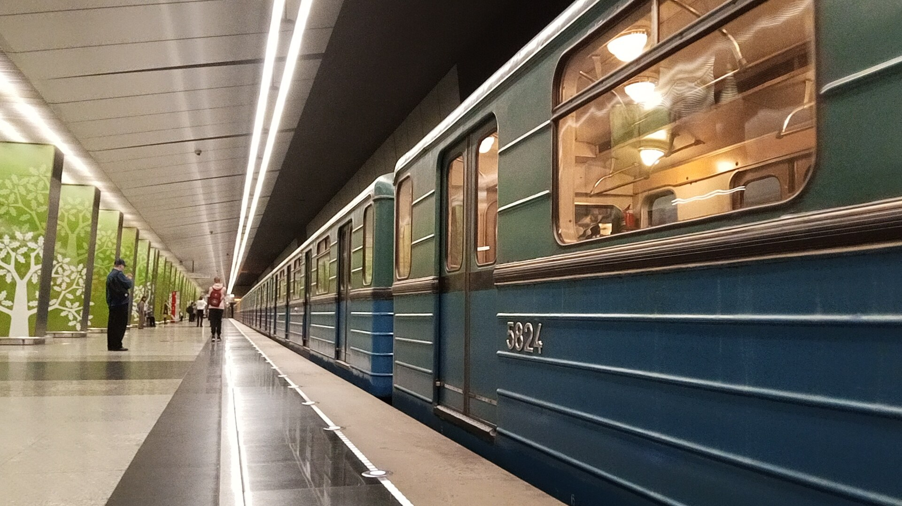
📸 pfandrom
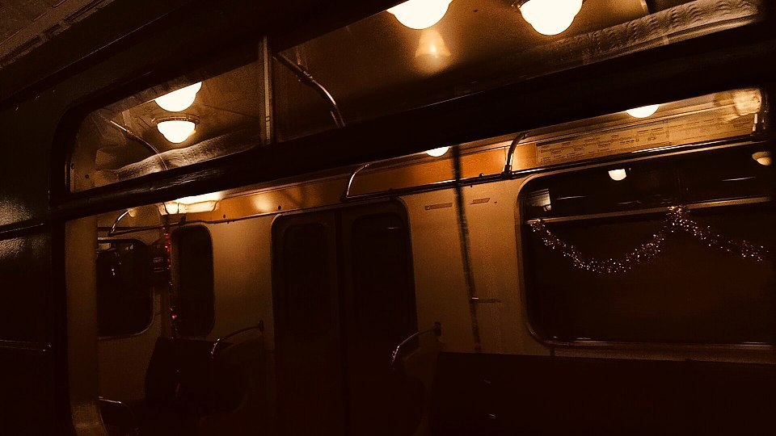
📸 pfandrom
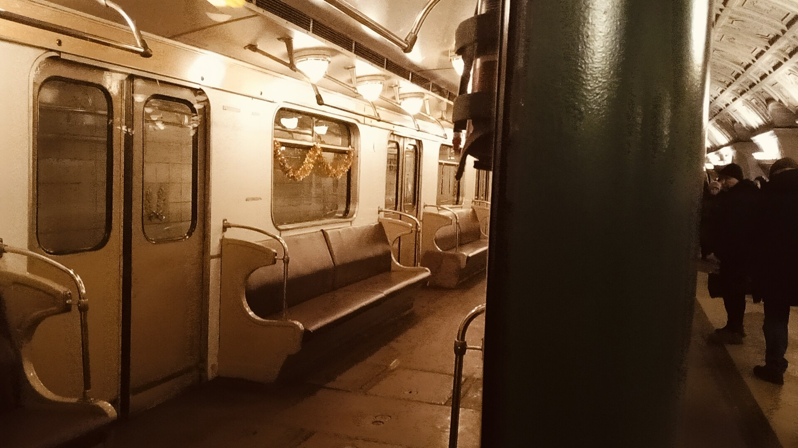
📸 pfandrom
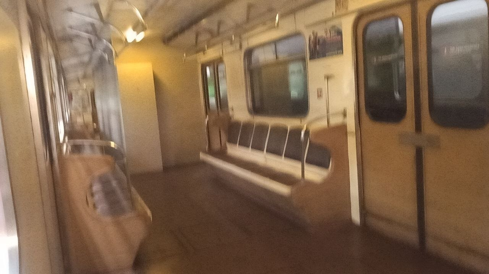
📸 pfandrom
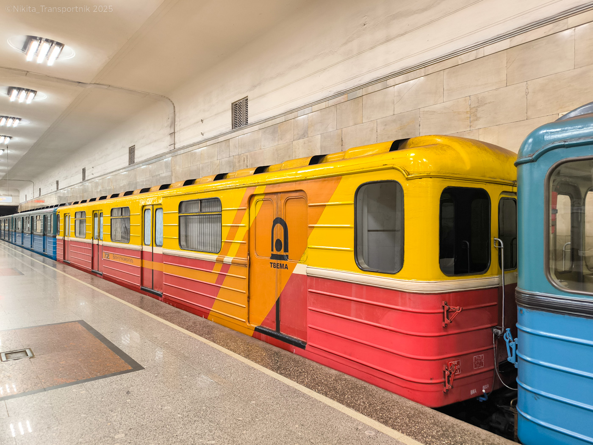
📸 Nikita_Transportnik
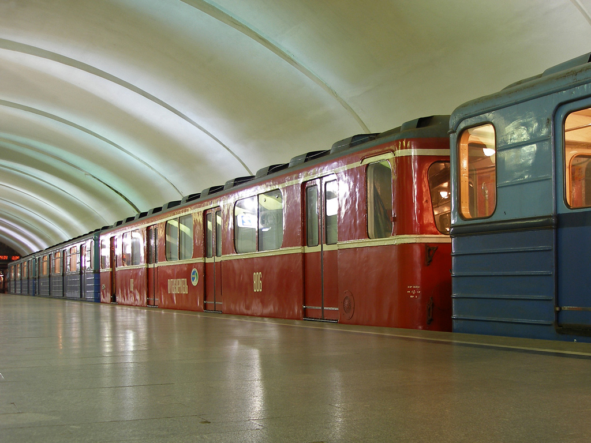
📸 gam
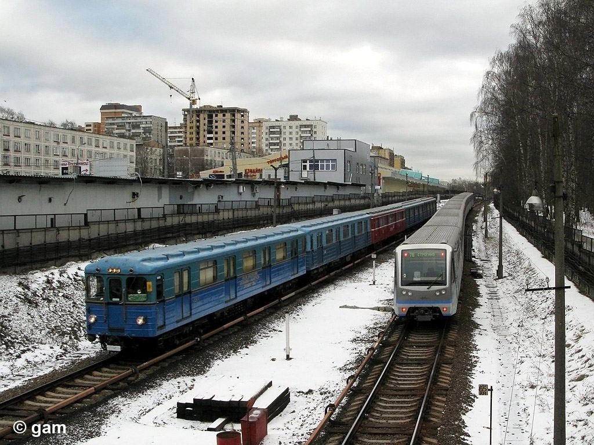
📸 gam
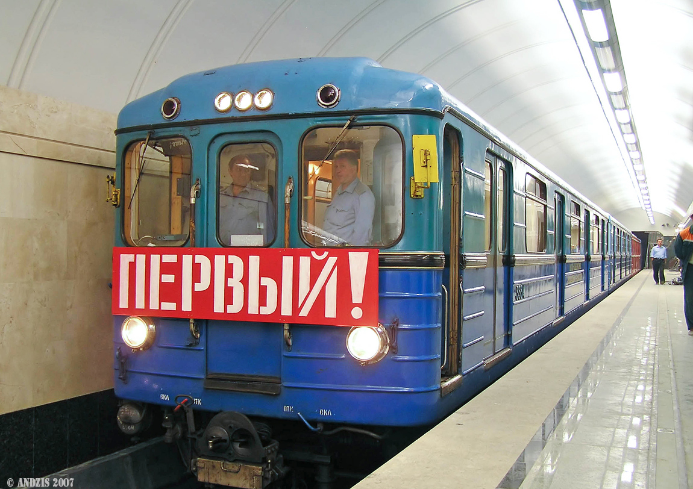
📸 andzis
Нажмите на фото для увеличения
«В составе путеизмерителя сохранён последний оригинальный Еж3 в России. Вагон-лаборатория СЦБ и связи №5564 служит с 1975 года. Это делает состав уникальным памятником истории Московского метрополитена».